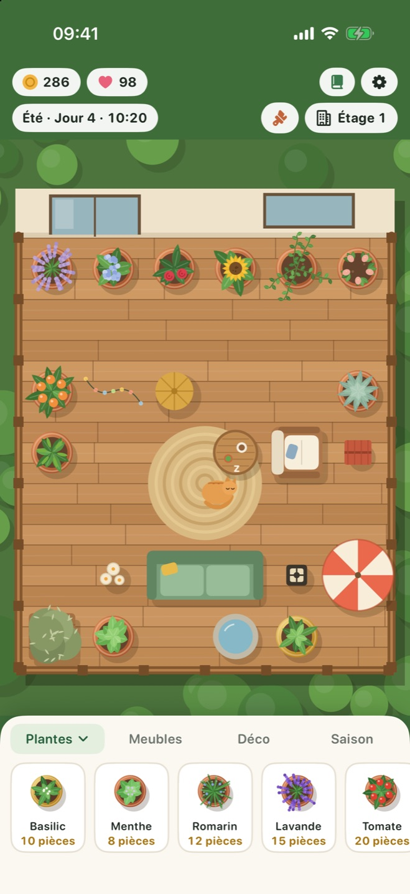
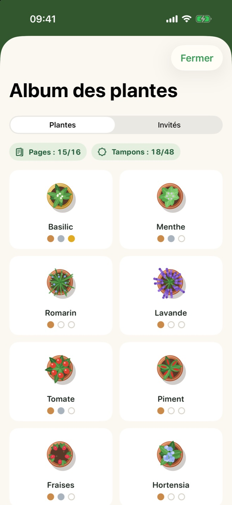
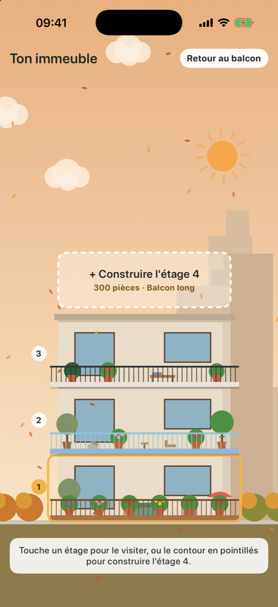

Pousse en temps réel
Une journée de jeu dure une heure réelle. De courtes visites au calme qui s'intègrent à ta journée, et toujours quelque chose de prêt à ton retour.
Pour iPhone et iPad
Plante des herbes, des fleurs et des fruits, décore ton balcon, suis les saisons et accueille des visiteurs à plumes et à poils. Un peu de calme chaque jour.
Fais glisser une plante sur ton balcon, arrose-la quand elle a soif et récolte-la quand elle est mûre.
Ajoute des canapés, des lanternes, des fontaines et de nouveaux sols. Un balcon douillet rapporte plus et attire plus de visiteurs.
Ton jardin continue de pousser quand l'app est fermée. Une plante oubliée ne meurt jamais ; elle attend juste un peu d'eau.
Tout pour un rituel quotidien apaisant, et rien qui te presse.
Une journée de jeu dure une heure réelle. De courtes visites au calme qui s'intègrent à ta journée, et toujours quelque chose de prêt à ton retour.
La pluie de printemps arrose tes plantes, le soleil d'été mûrit les tomates, les feuilles d'automne virevoltent et la neige d'hiver couvre la rambarde.
Place meubles et déco sur une grille, puis passe à un platelage en bois, du marbre ou une mosaïque et une nouvelle rambarde.
Papillons, abeilles, un hibou, un écureuil et les chats des voisins passent te voir. Découvre ce que chacun aime ; un chat pourrait même s'installer.
Remplis ton album des plantes avec les étapes de croissance et les tampons de récolte, et complète-le pour débloquer un citronnier spécial.
Économise des pièces pour ajouter des étages, chacun avec sa forme de balcon, et regarde ton immeuble changer au fil des saisons.
Engagez un jardinier qui arrose les plantes assoiffées et récolte les plantes mûres à chaque étage, pour un petit tarif. Disponible toutes les quatre heures.
Sauvegardez votre jardin sous un nom et revenez-y quand vous voulez. Jusqu'à dix sauvegardes.
Activez la synchronisation iCloud et votre jardin vous suit entre votre iPhone et votre iPad. C'est facultatif et cela reste dans votre propre compte Apple.



Un seul téléchargement gratuit pour les deux. Sur iPad, le balcon a plus de place et montre davantage du quartier.
Le balcon reste centré sur chaque écran, et le jardin s'étend jusqu'au bord, autour de la barre d'état.
| iPhone | iOS 17 ou version ultérieure |
|---|---|
| iPad | iPadOS 17 ou version ultérieure |
| iPhone Duo | Compatible |
| Prix | Gratuit. Sans publicité ni achat intégré. |
|---|---|
| Compte | Aucun. Fonctionne hors ligne. |
| Progression | Enregistrée sur ton appareil et, si tu actives la synchronisation, dans ton propre iCloud. |
Balcony Bloom n'a ni serveur, ni outil d'analyse, ni publicité. Rien de ce que tu fais dans le jeu n'arrive jamais au développeur. Lire la politique de confidentialité
Lis les questions fréquentes ou ouvre un ticket pour signaler un bug ou proposer une idée.